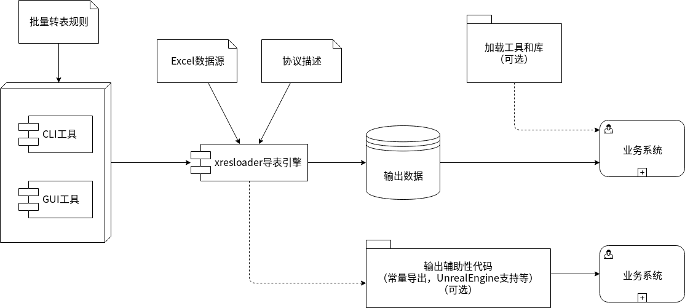
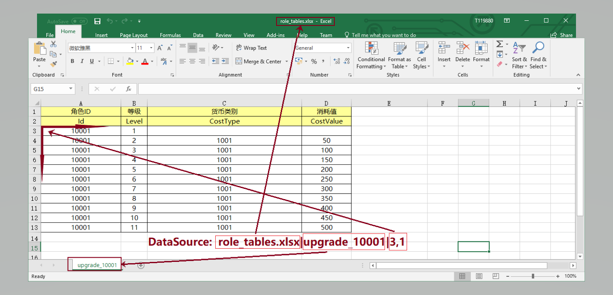
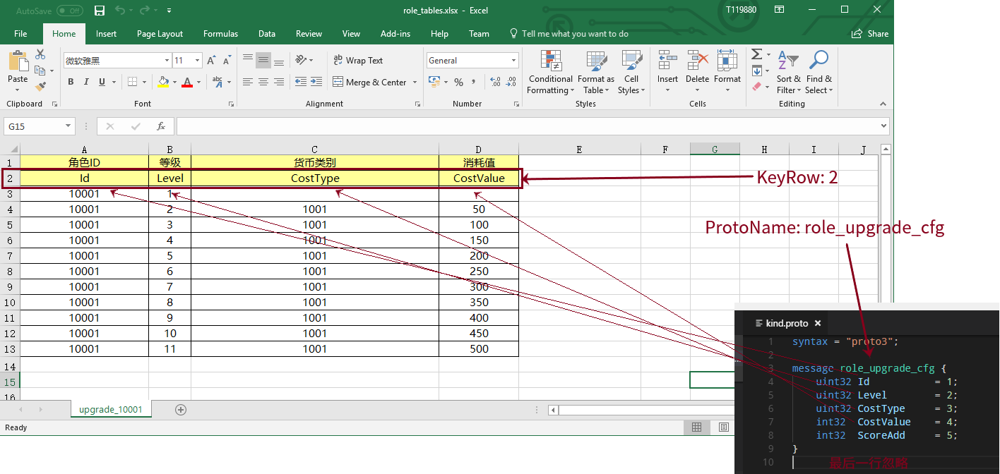
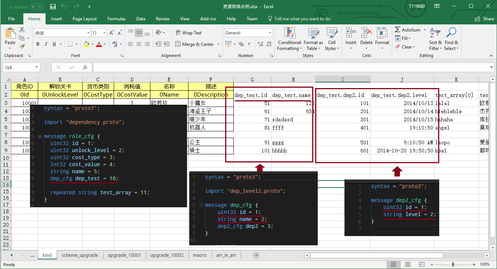
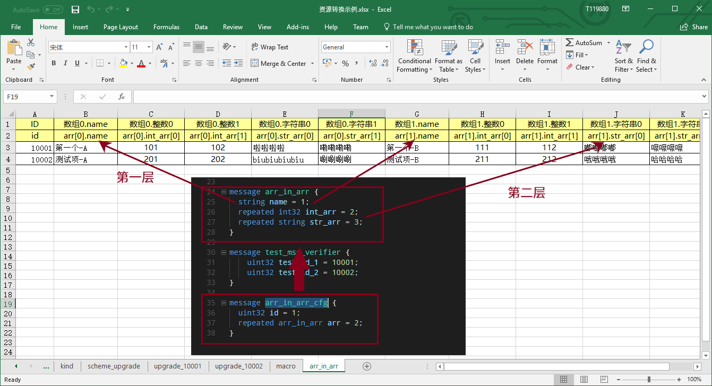

协议->Excel数据映射和支持的配置读取源 （scheme）
在 快速上手 章节里我们提供了一个基本的转表使用流程。整个流程图示如下：

上一章节里我们展示了 转表引擎-xresloader 的最基础的使用方式。
在使用的时候，我们需要告诉 xresloader 怎么把Excel里的数据对引到协议的数据结构里。
本章节主要是针对 协议描述 的说明。
配置项的结构
所有的数据源和规则设置都是Key-Value的形式。并且Value有三个，分别是**主配置，次要配置，补充配置**。 这三个参数对于不同配置的含义是不同的，具体没想配置的含义请参照 data-mapping-available-options 章节。
数据映射-Scheme
我们通过一些列scheme的配置来告诉 xresloader 从Excel的哪些地方读取数据，又转化到协议的哪个数据结构和哪个字段中。
数据源
我们通过 DataSource 来读取我们从哪个文件、哪个表及第几行第几列开始读数据。 比如：

然后再通过 ProtoName 和 KeyRow 来把Excel数据映射到哪个协议数据结构里和映射哪些字段。

类型嵌套和Message嵌套
对于复杂的数据类型，我们使用 父级字段名.子结构字段名 来标识映射关系。比如在 xresloader sample 中。

以上划红线处为Excel KeyRow 配置和对应的协议结构。
数组和下标
对于数组类型（protobuf的repeated类型）。我们使用 字段名[0开始的下标] 来表示。如果是数组嵌套数组，那么则是 父级字段名[父结构下标].子结构字段名[子结构下标] 。

以上示例是 xresloader sample 中的 arr_in_arr 表。
可用的配置项
字段 |
简介 |
主配置 |
次配置 |
补充配置 |
说明 |
|---|---|---|---|---|---|
DataSource |
配置数据源 |
文件路径 |
表名 |
数据起始行号,列号 (英文逗号分隔) |
必须。 可多个。多个则表示把多个Excel表数 据合并再生成配置输出，这意味着这多 个Excel表的描述Key的顺序和个数必须 相同。 |
MacroSource |
元数据数据源 |
文件路径 |
表名 |
数据起始行号,列号 (英文逗号分隔) |
|
编程接口配置 |
|||||
ProtoName |
协议描述名称 |
如: role_cfg |
|
||
OutputFile |
输出文件 |
如: role_cfg.bin |
|
||
KeyRow |
字段名描述行 |
如: 2 |
|
||
KeyCase |
字段名大小写 |
如: 小写 |
|
||
KeyWordSplit |
字段名分词字符 |
|
|||
KeyPrefix |
字段名固定前缀 |
|
|||
KeySuffix |
字段名固定后缀 |
|
|||
KeyWordRegex |
分词规则（正则表达式） 示例: |
判断规则 [A-Z_$ trn] |
移除分词符号规则 [_$ trn] |
前缀过滤规则 [a-zA-Z_$] |
|
Encoding |
编码转换 |
UTF-8 |
注：Google的protobuf库的代码里写死 了UTF-8，故而该选项对Protobuf的二 进制输出无效 |
||
UeCfg-UProperty |
UnrealEngine配置 支持的字段属性 |
字段分组 默认值: XResConfig |
蓝图权限 默认值: XResConfig |
编辑权限 默认值: EditAnywhere |
|
UeCfg-CaseConvert |
是否开启驼峰命名转换 （默认开启） |
true/false |
|
||
UeCfg-CodeOutput |
设置UE代码输出目录 |
代码输出目录 |
Publich目录前缀 |
Private目录前缀 |
|
UeCfg-RecursiveMode |
是否使用嵌套模式 （默认开启） |
true/false |
|
||
UeCfg-DestinationPath |
资源输出目录 |
资源输出目录 |
|
||
如果Excel里字段名使用上面示例里的规则，如果填的是 0UnlockLevel_num，则会忽略第一个0（不符合前缀过滤规则）,按分词规则分词为Unlock、Level和num，
同时移除下划线分词符号（移除分词符号规则）。 然后按上面的大小写规则和 字段名分词字符 组成新的字段名，最后应用大小写规则。
假设 字段名分词字符 是 _ 。 字段名大小写 是小写，则最后对应的协议的字段名是 unlock_level_num 。
字段名分词、大小写转换、等字段名转换的功能建议非必要不要使用。这里只是为了有些时候需要和其他工具搭配使用的时候的一些适配。
关于设置编码
由于protobuf里写死的UTF-8，所以编码设置不是对所有的功能都生效。如果输出的类型是代码文件或者文本文件，那么转表工具会尝试把文本内容转换成该编码。 对于二进制输出，这个选项是无效的。
从哪里读取字段映射信息？
字段映射信息我们除了可以直接使用 转表引擎-xresloader 的 -m 选项指定外，还支持多种读取来源。
如果从文件中读取，我们是根据文件后缀来区分读取来源的。
直接写在批量转表文件里（推荐）
在使用批量转表功能的时候建议直接写在批量转表配置里，详见 批量转表工具
直接写在Excel里: 文件后缀.xls,.xlsx
当字段映射信息保存在Excel里时，scheme的名字就是表名（ -m 参数）。我们会先查找列明为 字段或header 、主配置或major 、次配置或minor 和 补充配置或addition 的字段，并依此列读取相应配置。如:
字段 |
简介 |
主配置 |
次配置 |
补充配置 |
说明 |
|---|---|---|---|---|---|
DataSource |
配置数据源(文件路径,表名) |
资源转换示例.xlsx |
upgrade_10001 |
3,1 |
次配置为表名，补充配置为数据起始位置(行号, 列号) |
DataSource |
配置数据源(文件路径,表名) |
upgrade_10002 |
3,1 |
次配置为表名，补充配置为数据起始位置(行号, 列号) |
|
MacroSource |
元数据数据源(文件路径,表名) |
资源转换示例.xlsx |
macro |
2,1 |
次配置为表名，补充配置为数据起始位置(行号, 列号) |
编程接口配置 |
|||||
ProtoName |
协议描述名称 |
role_upgrade_cfg |
|||
OutputFile |
输出文件 |
role_upgrade_cfg.bin |
|||
KeyRow |
字段名描述行 |
2 |
|||
KeyCase |
字段名大小写 |
不变 |
大写/小写/不变 |
||
KeyWordSplit |
字段名分词字符 |
||||
KeyPrefix |
字段名固定前缀 |
||||
KeySuffix |
字段名固定后缀 |
||||
KeyWordRegex |
分词规则 |
(判断规则,移除分词符号规则,前缀过滤规则)正则表达式 |
|||
Encoding |
编码转换 |
UTF-8 |
|||
直接写在json文件里: 文件后缀.json
当字段映射信息保存在Excel里时，我们认为json的根节点包含一个数组，下面时key-value类型数据，key为scheme的名字（ -m 参数）。里面还是Key-Value类型或Key-List类型。对应着每项配置。如：
{
"scheme_kind": {
"DataSource": ["资源转换示例.xlsx", "kind", "3,1"],
"MacroSource": ["资源转换示例.xlsx", "macro", "2,1"],
"ProtoName": "role_cfg",
"OutputFile": "role_cfg.bin",
"KeyRow": 2,
"KeyCase": "小写",
"KeyWordSplit": "_",
"KeyWordRegex": ["[A-Z_\\$ \\t\\r\\n]", "[_\\$ \\t\\r\\n]", "[a-zA-Z_\\$]"],
"Encoding": "UTF-8"
}
}
直接写在ini文件里: 文件后缀.ini,.conf,.cfg
当字段映射信息保存在Excel里时，scheme的名字（ -m 参数）是section的名字，里面的数据是:
Key名称.0 => Key名称的主配置
Key名称.1 => Key名称的次配置
Key名称.2 => Key名称的补充配置
比如:
[scheme_kind]
DataSource.0 = 资源转换示例.xlsx
DataSource.1 = kind
DataSource.2 = 3,1
MacroSource.0 = 资源转换示例.xlsx
MacroSource.1 = macro
MacroSource.2 = 2,1
ProtoName = role_cfg
OutputFile = role_cfg.bin
KeyRow = 2
KeyCase = 小写
KeyWordSplit = _
KeyWordRegex.0 = [A-Z_\$ \t\r\n]
KeyWordRegex.1 = [_\$ \t\r\n]
KeyWordRegex.2 = [a-zA-Z_\$]
Encoding = UTF-8
完整的样例
以上配置选项在 xresloader sample 中有完整的示例，并且在。 xresloader 的 README.md 中有举例说明。